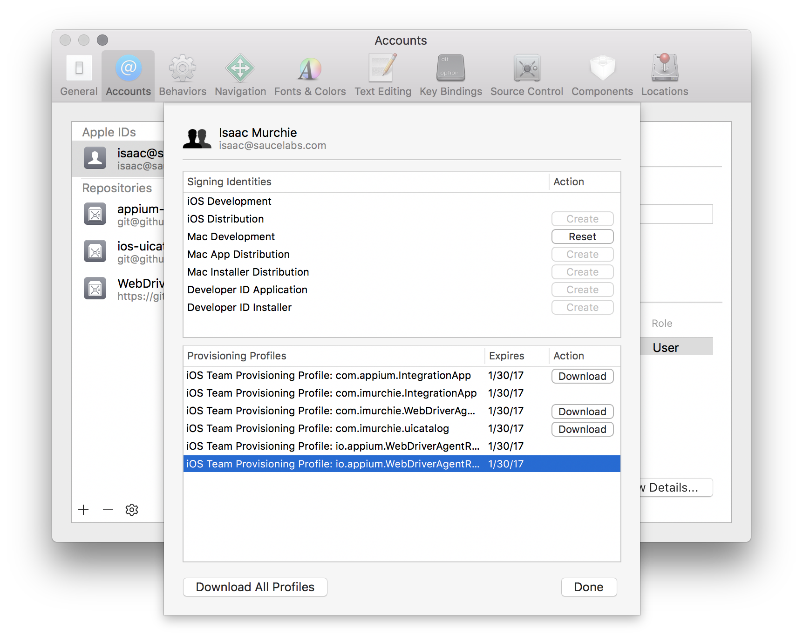
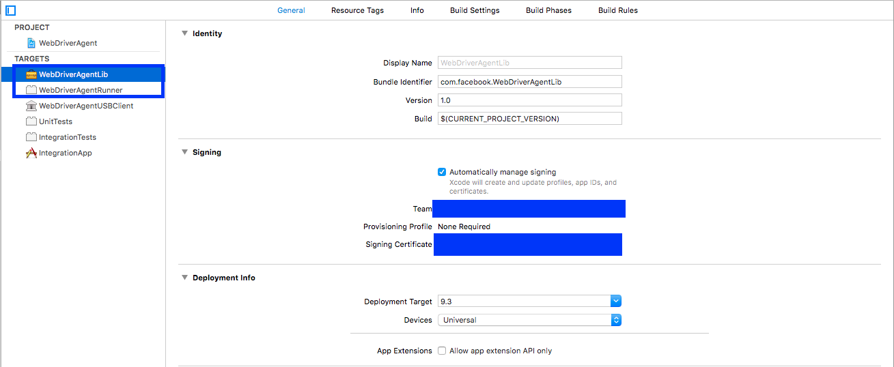
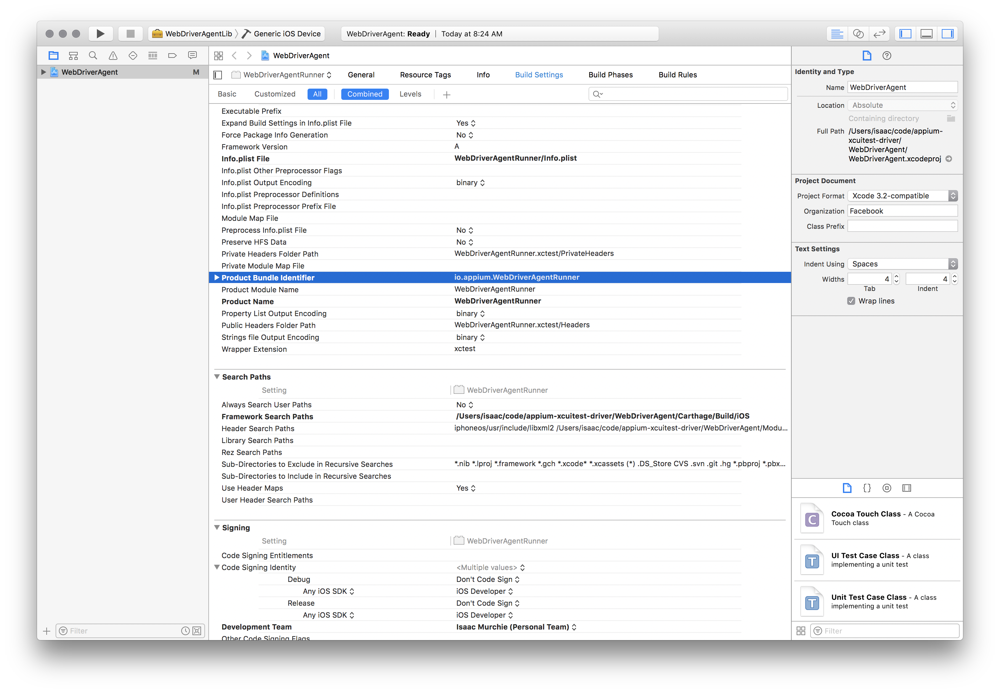

Appium on iOS Real Devices
Appium has support for iOS real device testing.
Running your tests with Appium
Once your device and app are configured, you can run tests on that device by
passing the udid desired capability, and the bundle ID (via the bundleId
capability, if the app is installed on the device) or the path to the .ipa or
.app file via the app desired capability.
Desired Capabilities
You can launch the app on a device by including the following desired capabilities in your tests:
apporbundleId- specifies the application, or, if it is already installed, simply the bundle identifier of the app so that Appium can launch itudid- the specific id of the device to test on. This can also be set toautoif there is only a single device, in which case Appium will determine the device id and use it
Refer to the Appium server capabilities page for more detail on the capabilities that you can use.
Required Software
Appium iOS real device support depends on a central third-party software suite, libimobiledevice, which is easily installable with Homebrew)
brew install libimobiledevice
Configuring iOS Real Device Tests: Xcode 7 and iOS 9.3 or below
Automating real devices with iOS 9.3 or below, using Xcode 7.3 or below (i.e., Instruments-based testing) requires a relatively small amount of configuration. The central requirement is to have a build of your app signed with a development provisioning profile. Unfortunately Apple has removed all of its documentation on using older versions of Xcode, but a good overview of the process can be found here and here.
In a little more detail, to get started on a real device, you will need the following:
- An Apple Developer ID and a valid Developer Account with a configured development certificate and provisioning profile.
- A valid iOS Development Certificate and Provisioning Profile are necessary to test on a real device. Your app will also need to be signed. You can find information about this in the Apple documentation.
- An iPad or iPhone. Make sure this has been set up for development in Xcode.
- A signed
.appor.ipafile of your app, or the source code to build one. - A Mac with Xcode and the Xcode Command Line Developer Tools.
Appium handles installing the application to the device, using ideviceinstaller
(part of libimobiledevice), but it is sometimes easier to pre-install your app
using Xcode to ensure there are no problems (see the iOS deploy
document for more information).
Troubleshooting ideas
- Make sure UDID is correct by checking it in Xcode Organizer or iTunes. It is a long string (20+ chars).
- Make sure that you can run your tests against the Simulator.
- Double check that you can invoke your automation from Instruments.
- Make sure Instruments is not already running.
- Make sure UI Automation is enabled on your device. Settings -> Developer -> Enable UI Automation
Configuring iOS Real Device Tests: Xcode 8 and iOS 9.3 and above
In addition to the dependency on libimobiledevice, Appium support for real
devices running iOS 9.3 and above using Xcode 8+ also depends on ios-deploy,
which is easily available through npm
npm install -g ios-deploy
Unfortunately, Apple changed the way it makes testing available, and the new way requires the installation of a helper application onto the device, through which the application under test is automated. While this is simple in theory, the hoops of code signing and provisioning applications for development and testing can make this a bit of a headache.
The application that Appium installs is called WebDriverAgent-Runner (found
here), and to do the install
Appium needs to be able to configure its build.
Basic (automatic) configuration
The easiest way to get up-and-running with Appium's XCUITest support on iOS real devices is to use the automatic configuration strategy. There are two ways to do this:
- Use the
xcodeOrgIdandxcodeSigningIddesired capabilities:
{
"xcodeOrgId": "<Team ID>",
"xcodeSigningId": "iPhone Developer"
}
- Create a
.xcconfigfile somewhere on your file system and add the following to it:
DEVELOPMENT_TEAM = <Team ID>
CODE_SIGN_IDENTITY = iPhone Developer
In either case, the Team ID is a unique 10-character string generated by Apple that is assigned to your team. You can find your Team ID using your developer account. Sign in to developer.apple.com/account, and click Membership in the sidebar. Your Team ID appears in the Membership Information section under the team name. You can also find your team ID listed under the "Organizational Unit" field in your iPhone Developer certificate in your keychain.
Note that these are mutually exclusive strategies; use either the
xcodeConfigFile capability or the combination of xcodeOrgId and xcodeSigningId.
Once this configuration is done, it should just be a matter of starting your test
specifying a real device in your udid desired capability.
If this has not worked it will usually manifest itself in the Appium server logs
as some error followed by info XCUITest xcodebuild exited with code '65' and
signal 'null'. This usually means that the necessary code signing is not set up
correctly. Go on to the Basic (manual) configuration
to fix.
If the WebDriverAgentRunner is successfully installed on the device, but in the
Appium logs there is an error message something like:
2017-01-24 09:02:18.358 xcodebuild[30385:339674] Error Domain=com.apple.platform.iphoneos Code=-12 "Unable to launch com.apple.test.WebDriverAgentRunner-Runner" UserInfo={NSLocalizedDescription=Unable to launch com.apple.test.WebDriverAgentRunner-Runner, NSUnderlyingError=0x7fa839cadc60 {Error Domain=DTXMessage Code=1 "(null)" UserInfo={DTXExceptionKey=The operation couldn’t be completed. Unable to launch com.apple.test.WebDriverAgentRunner-Runner because it has an invalid code signature, inadequate entitlements or its profile has not been explicitly trusted by the user. : Failed to launch process with bundle identifier 'com.apple.test.WebDriverAgentRunner-Runner'}}}
2017-01-24 09:02:18.358 xcodebuild[30385:339674] Error Domain=IDETestOperationsObserverErrorDomain Code=5 "Early unexpected exit, operation never finished bootstrapping - no restart will be attempted" UserInfo={NSLocalizedDescription=Early unexpected exit, operation never finished bootstrapping - no restart will be attempted}
Testing failed:
Test target WebDriverAgentRunner encountered an error (Early unexpected exit, operation never finished bootstrapping - no restart will be attempted)
The problem is that the developer is not trusted on the device. If you manually
try to run the WebDriverAgentRunner app on the device, you will see a popup
message:

You can go to Settings => General => Device Management on the device to trust
the developer and allow the WebDriverAgentRunner app to be run (see Apple
documentation for more information).
Basic (manual) configuration
There are many cases in which the basic automatic configuration is not enough. This usually has to do with code signing and the configuration of the project to be able to be run on the real device under test. Often this happens when the development account being used is a "Free" one, in which case it is not possible to create a wildcard provisioning profile, and will often not create one for the default application bundle.
This will manifest as something like an error that Xcode failed to create provisioning profile:

The easiest way around this is to create a provisioning profile by opening Xcode and creating a new project:

The type does not matter, other than it being "iOS". "Single View Application" is the easiest:

The important part is to use a unique "Product Name" and "Organization Name". Also, at this point, specify your "Team".

You can confirm that the provisioning profile was created by looking at the "Project" tab:

Or by going into your account preferences and seeing the provisioning profile:

At this point you have a valid provisioning profile. Make note of the bundle id
you associated with it, and add that in the updatedWDABundleId desired
capability for your tests. Then follow the initial instructions for automatic
configuration.
Full manual configuration
Alternatively, the provisioning profile can be manually associated with the project (keep in mind that this will have to be done each time the WebDriverAgent is updated, and is not recommended):
- Find out where your Appium installation is:
$ which appium
/path/where/installed/bin/appium
- Given this installation location,
/path/where/installed/bin/appium,WebDriverAgentwill be found in/path/where/installed/lib/node_modules/appium/node_modules/appium-xcuitest-driver/WebDriverAgent. Open a terminal and go to that location, then run the following in order to set the project up:
mkdir -p Resources/WebDriverAgent.bundle
./Scripts/bootstrap.sh -d
-
Open
WebDriverAgent.xcodeprojin Xcode. For both theWebDriverAgentLibandWebDriverAgentRunnertargets, select "Automatically manage signing" in the "General" tab, and then select yourDevelopment Team. This should also auto selectSigning Ceritificate. The outcome should look as shown below:
- Xcode may fail to create a provisioning profile for the
WebDriverAgentRunnertarget:

- This necessitates manually changing the bundle id for the target by going
into the "Build Settings" tab, and changing the "Product Bundle Identifier"
from
com.facebook.WebDriverAgentRunnerto something that Xcode will accept:

- Going back to the "General" tab for the
WebDriverAgentRunnertarget, you should now see that it has created a provisioning profile and all is well:

- Xcode may fail to create a provisioning profile for the
-
Finally, you can verify that everything works. Build the project:
xcodebuild -project WebDriverAgent.xcodeproj -scheme WebDriverAgentRunner -destination 'id=<udid>' test
If this was successful, the output should end with something like:
Test Suite 'All tests' started at 2017-01-23 15:49:12.585
Test Suite 'WebDriverAgentRunner.xctest' started at 2017-01-23 15:49:12.586
Test Suite 'UITestingUITests' started at 2017-01-23 15:49:12.587
Test Case '-[UITestingUITests testRunner]' started.
t = 0.00s Start Test at 2017-01-23 15:49:12.588
t = 0.00s Set Up
- To completely verify, you can try accessing the WebDriverAgent server status (note: you must be on the same network as the device, and know its IP address, from Settings => Wi-Fi => Current Network):
export DEVICE_URL='http://<device IP>:8100'
export JSON_HEADER='-H "Content-Type: application/json;charset=UTF-8, accept: application/json"'
curl -X GET $JSON_HEADER $DEVICE_URL/status
You ought to get back output something like this:
{
"value" : {
"state" : "success",
"os" : {
"name" : "iOS",
"version" : "10.2"
},
"ios" : {
"simulatorVersion" : "10.2",
"ip" : "192.168.0.7"
},
"build" : {
"time" : "Jan 23 2017 14:59:57"
}
},
"sessionId" : "8951A6DD-F3AD-410E-A5DB-D042F42F68A7",
"status" : 0
}